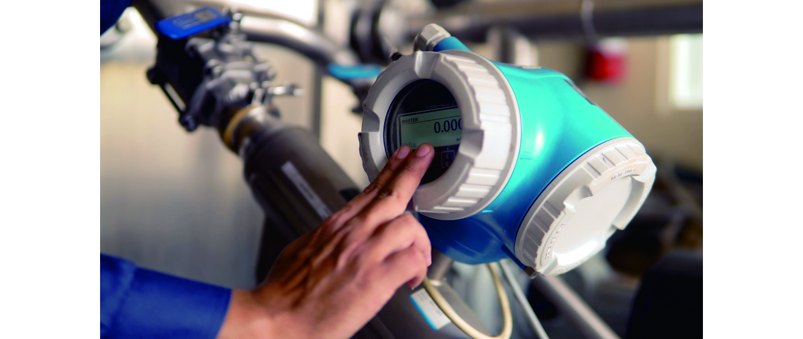
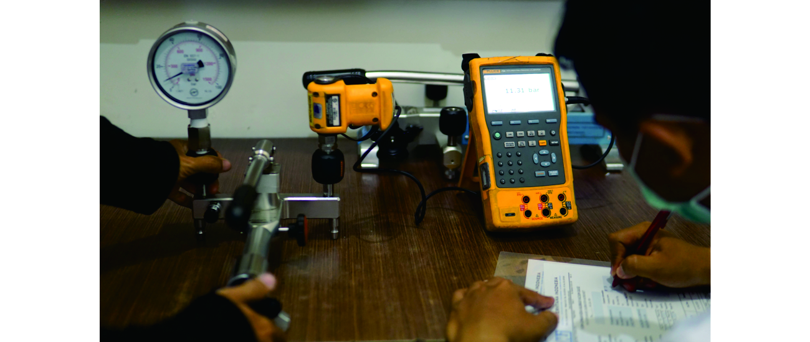
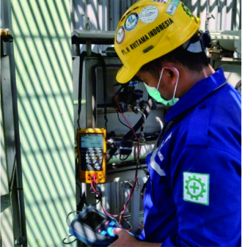
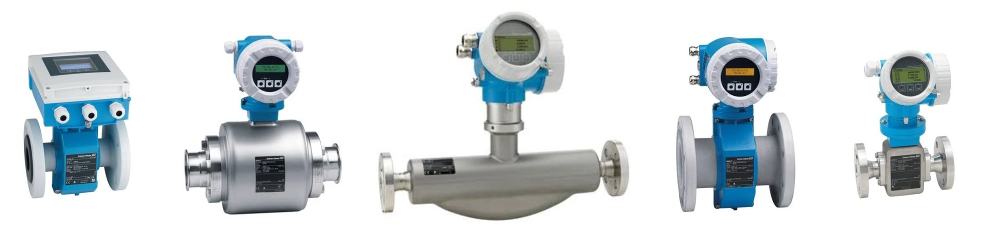
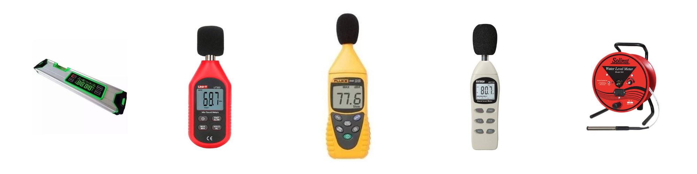
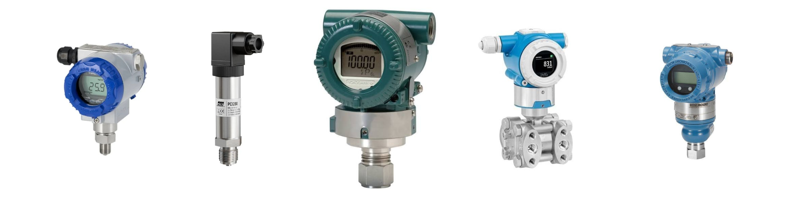
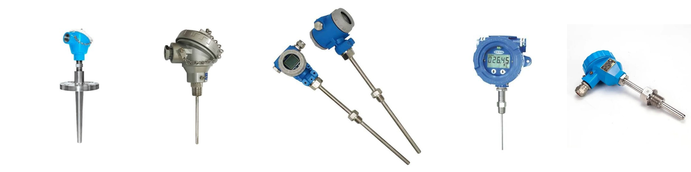
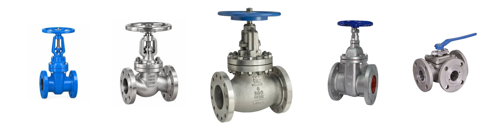
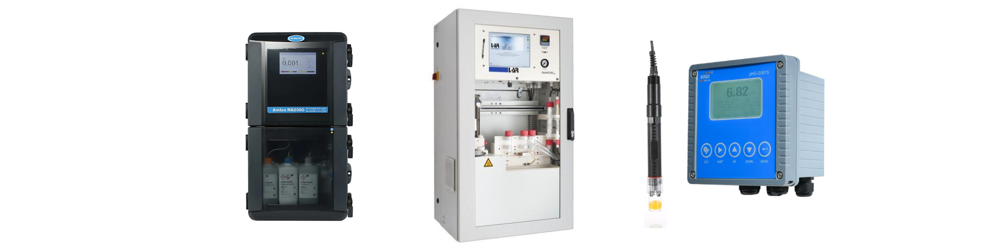

Magnetic
Measures conductive liquids using electromagnetic induction. No moving parts, well suited to water, wastewater, and slurries.
Faraday's lawFlowmeters. Level meters. Pressure instruments. From the first connection to the final check, we install, set, and commission your instruments so they perform accurately from day one, and keep your operation running as planned.

Plant Name, City

Plant Name, City

Plant Name, City
Plant Name, City
Plant Name, City
Plant Name, City

A flowmeter measures how much liquid, gas, or steam passes through a pipe. The right type depends on the fluid and the process, and correct installation and setting is what keeps the readings accurate.
Measures conductive liquids using electromagnetic induction. No moving parts, well suited to water, wastewater, and slurries.
Faraday's lawUses ultrasonic signals to measure flow velocity, with options that attach outside the pipe without interrupting the process.
Transit-time / DopplerMeasures mass flow directly through vibrating tubes, and can also report density. Used where high accuracy matters.
Coriolis effectMeasures flow from the vortices shed behind a bluff body. Commonly used for steam, gases, and liquids.
Vortex shedding
A level meter measures the level of liquids or solids in tanks and process vessels. The appropriate technology depends on the material, operating conditions, and required measurement accuracy.
Uses microwave signals to measure level without direct contact with the material. Suitable for liquids and solids in demanding process conditions. Converts temperature sensor signals into standardized electrical outputs for monitoring and process control systems.
Microwave RadarMeasures level using reflected sound waves. Commonly used for liquid storage tanks and applications where non-contact measurement is preferred.
Ultrasonic EchoDetermines liquid level from the pressure difference caused by the liquid column. Widely used in industrial tanks and process vessels.
Hydrostatic PressureDetects liquid level through changes in electrical resistance. Suitable for applications using conductive probes or resistive level-sensing elements.
Electrical ResistanceMeasures level through changes in electrical capacitance as the material level changes. Can be used for liquids and certain solid materials.
Capacitance Principle
Pressure instruments monitor and control pressure in industrial processes to help maintain safe operating conditions and reliable system performance. The right instrument depends on the required measurement range, accuracy, and control function.
Converts pressure measurements into standardized electrical signals for monitoring, recording, and process control systems.
Pressure MeasurementActivates or deactivates an electrical circuit when pressure reaches a predefined setpoint. Commonly used for alarms and automatic control.
Setpoint SwitchingDisplays pressure directly through a mechanical or digital indicator. Commonly used for local pressure monitoring in pipes, tanks, and industrial equipment.
Mechanical / Digital
Temperature instruments measure and monitor thermal conditions in industrial processes. They help maintain product quality, process stability, and equipment safety through accurate temperature measurement and control.
Converts temperature sensor signals into standardized electrical outputs for monitoring and process control systems.
Signal ConversionDetects temperature changes using sensing technologies such as RTDs and thermocouples. Suitable for measuring temperature across a wide range of industrial applications.
RTD / Thermocouple
Industrial valves regulate, control, or isolate the flow of liquids, gases, and steam within process systems. The appropriate valve depends on the application, operating conditions, and required flow-control performance.
Automatically regulates flow, pressure, or temperature based on signals from a control system to maintain the desired process conditions.
Flow RegulationOpens or closes a process line to control fluid passage and isolate equipment for maintenance or operational requirements.
On / Off ControlUses pneumatic, electric, or hydraulic actuation to operate valves remotely or automatically within industrial processes.
Pneumatic / Electric / HydraulicReleases excess pressure when it exceeds a predetermined limit, helping protect equipment and process systems from overpressure conditions.
Overpressure Protection
Liquid analysis instruments measure chemical and physical parameters to assess water quality and monitor industrial or environmental processes. These measurements support process optimization, water treatment, and environmental monitoring.
Measures the acidity or alkalinity of a liquid to support water treatment, chemical processing, and quality control.
Acidity / AlkalinityMeasures chemical oxygen demand, indicating the amount of oxygen required to chemically oxidize substances in a water sample.
Chemical Oxygen DemandMeasures ammonia concentration in water to help monitor wastewater treatment performance and evaluate water quality.
NH₃ / NH₄⁺Measures water cloudiness caused by suspended particles. Commonly used in drinking water treatment and environmental monitoring.
Light ScatteringMeasures the concentration of oxygen dissolved in water, an important parameter for biological treatment and aquatic environments.
Oxygen ConcentrationMeasures residual chlorine concentration to monitor disinfection effectiveness in water treatment and distribution systems.
Residual Chlorine
SPARING (Sistem Pemantauan Kualitas Air Limbah secara Terus-Menerus dan Dalam Jaringan) is a continuous wastewater quality monitoring system that records and transmits measurement data to support environmental monitoring and regulatory compliance.
Measures wastewater acidity or alkalinity to monitor process conditions and support compliance with applicable discharge requirements.
pH MeasurementMonitors chemical oxygen demand to assess the organic pollution load in wastewater treatment processes.
Chemical Oxygen DemandMeasures total suspended solids to evaluate the concentration of suspended particles in wastewater.
Total Suspended SolidsMeasures wastewater flow rate to support discharge monitoring, process evaluation, and wastewater management.
Wastewater Flow RateCollects, processes, and transmits monitoring data to support continuous observation, reporting, and environmental compliance.
Real-Time Data Transmission